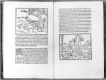

[Francesco Colonna(?),] Hypnerotomachia Poliphili, ubi humana omnia non nisi somnium esse docet. [...] [Venetiis, in aedibus Aldi Manutii, 1499.] -- (Bibliotheca Thysiana, 948)
Toen Aldus Manutius (circa 1450-1515) in 1494 zijn drukkersactiviteiten begon, moet zijn vestigingsplaats Venetië het resultaat van een weloverwogen keuze zijn geweest. Daar immers vond hij de geleerden die hem konden helpen bij de vervulling van zijn ideaal. Humanist in hart en nieren, stelde hij namelijk zich niets minder ten doel dan het drukken van ‘editiones principes’ (eerste uitgaven) van de zozeer door hem bewonderde Griekse en Latijnse schrijvers uit de klassieke oudheid. Vooral ten opzichte van de Griekse auteurs bracht hij zijn plannen, zij het ten koste van grote inspanningen en moeilijkheden, ten uitvoer. Dank zij de editoriale werkzaamheden van de Kretenzer Marcus Musurus (circa 1470-1517) verschenen zo bij voorbeeld tussen 1495 en 1498 de bewonderenswaardige uitgave in vijf foliodelen van Aristoteles en in 1498 die van Aristophanes. Het gebruikte lettermateriaal was speciaal voor Manutius ontworpen door Francesco Griffo uit Bologna. Het was gebaseerd op het handschrift van die tijd en betekende toen, hoe men er nu dan ook over mag denken, een aanzienlijke verbetering.
Manutius drukte echter niet alleen in het Grieks of Latijn. Ook in zijn moedertaal, het Italiaans, kwamen er boeken van zijn pers. Het beroemdste daarvan is de Hypnerotomachia Poliphili (Droom-liefde-strijd van Poliphilo). Op grond van een acrostichon bestaande uit de eerste letters van elk hoofdstuk, ‘Poliam frater Franciscus Columna peramavit’ (broeder Francesco Colonna heeft Polia zeer liefgehad), wordt deze als de auteur beschouwd. Colonna (1432/3-1527), een dominicaan van niet geheel onberispelijke levenswandel, beschreef door middel van talloze allegorieën de zwerftochten van Poliphilo (wat ‘minnaar van Polia’ betekent) door een woud vol nimfen en langs bouwwerken, in klassieke stijl opgetrokken en voorzien van inscripties die door hun uiterlijk sterk aan de Romeinse doen denken. Maar, net als bij Herckmans (zie nummer 33), zou het aan Colonna toegeschreven boek om buiten-literaire redenen beroemd worden. De combinatie van de gebruikte drukletter, een eveneens door Griffo gesneden romein, en de door een onbekende kunstenaar ontworpen illustraties zorgde daarvoor. Beide zijn van een, in de twee betekenissen van het woord, klassieke helderheid. Wanneer men de illustraties, die in zeer nauwe aansluiting op de tekst gemaakt zijn, vergelijkt met andere, vooral Noord-Europese, springen de verschillen direct in het oog. Maar zelfs wanneer ze vergeleken worden met andere Italiaanse, zowel Venetiaanse als Florentijnse, blijkt hun kwaliteit onovertroffen. Mede daardoor is de Hypnerotomachia Poliphili een meesterwerk van boekverzorging geworden, waarvan bibliofielen al bijna vijf eeuwen plezier beleven.
Literatuur
- Gesamtkatalog der Wiegendrucke. Leipzig [etc.] 1925-(1985)- , 7223.
- Martin Lowry, The world of Aldus Manutius. Business and scholarship in Renaissance Venice. Oxford [1979], p. 118-125.
| vorige pagina | top pagina |